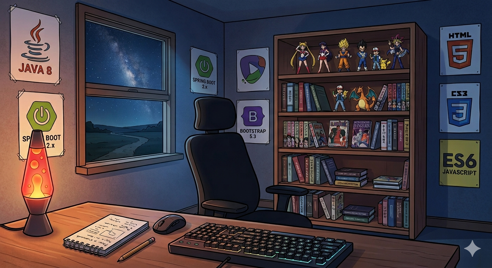

Java Fullstack - SENCE 2026
Proyecto fullstack desarrollado en Java con Spring Boot, enfocado en la construcción de una API REST robusta, manejo de arquitectura backend, validaciones y buenas prácticas de desarrollo profesional.
Hola, soy Aeljandro Saa, un desarrollador Backend enfocado en Spring Boot y Java con más de dos años de experiencia en el desarrollo de soluciones de software empresariales. Cuento con amplios conocimientos en la construcción de aplicaciones de calidad, caracterizándome por implementar buenas prác- ticas de desarrollo y de arquitectura de software. Puedo aportar en la generación de soluciones robustas en plazos acotados.

Proyecto fullstack desarrollado en Java con Spring Boot, enfocado en la construcción de una API REST robusta, manejo de arquitectura backend, validaciones y buenas prácticas de desarrollo profesional.

Imagen Docker personalizada que integra PostgreSQL 17.10 con la extensión pg_jsonschema (actualmente v0.3.4), permitiendo validar documentos JSON mediante JSON Schema directamente desde la base de datos. Cada publicación se distribuye mediante tags versionados para facilitar la trazabilidad y el despliegue en distintos entornos.